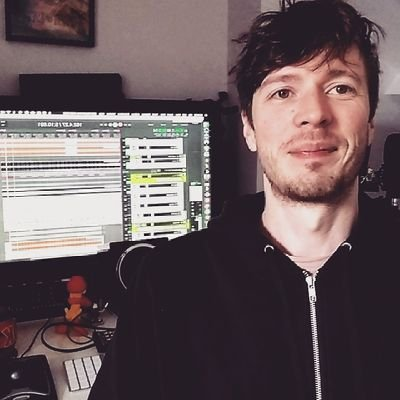
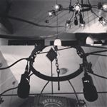
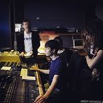
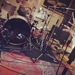
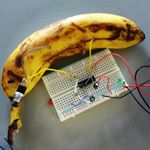

Hi! My name is Adam Staff.
I am a freelance musician and producer, based in the South East of the UK.
I'm here to make each song its best; whether that's by booking rooms, choosing microphones, tweaking synths or talking philosophy.

In recent years, most of my work has been producing people's music. Production has a broad meaning these days, and my work includes most of those meanings.
Sometimes that means project management, sometimes recording and mixing, sometimes arranging and performance. I'm here to fill in the gaps, or find the best person for the job.
Along the way I have also done sound design and mixing for art installations, delivered workshops in sound programming and composition, and tutored in all things sound and technology.
  
In my day-job, I work as a technician and demonstrator for the music department at the University of Sussex.
I have also worked at loads of venues, festivals and studios, and in plenty of bedrooms, attics and kitchens.
All this experience means that when it comes to your project, I can speak your language.
Get in touch about your project and let's have a conversation.

Handmade by Adam Staff 2013-2021